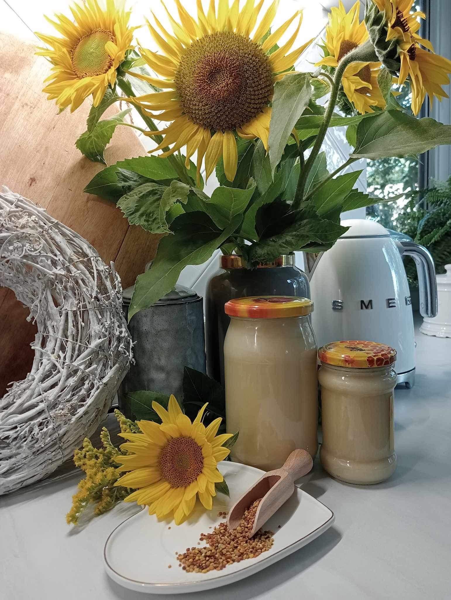

Miód faceliowy

Służy do przyprawiania potraw, podleczenia przeziębienia oraz nieżycie żołądka.
Miód gryczany
Korzystnie oddziałuje w zapobieganiu i leczeniu chorób serca i układu krążenia. Ma także duże znaczenie, jako lek ochraniająco-odtruwający wątrobę.
Miód malinowy
Działa napotnie, rozgrzewająco, antyseptycznie i przeciwgorączkowo.
Miód nawłociowy
Popularny w leczeniu układu moczowego, pęcherza, przeroście prostaty, kamicy nerkowej, zapaleniu jelit, leczniczy dla dróg żółciowych oraz stawów.
Miód z koniczyny białej
Działa wykrztuśnie, napotnie przeciwzapalnie i moczopędnie
Miód Mniszkowy
Posiada wiele właściwości leczniczych, zawiera wiele witamin i minerałów. Między innymi witaminę B1, C, potas, fosfor, mangan i żelazo.
Miód wielokwiatowy
Ze względu na wysoką zawartość cukrów prostych jest wykorzystywany jako środek leczniczy na choroby serca i naczyń, a także chorobę
Miód rzepakowy
Miód ten pomaga w chorobach serca i układu krążenia. Zalecany przy miażdżycy.
Miód akacjowy
Stosowany w leczeniu nadkwasoty żołądka oraz zaburzeń przewodu pokarmowego nerek i dróg moczowych.
Miód lipowy
Uważany jest powszechnie za najlepszy środek przy przeziębieniu, grypie, w chorobach występujących z wysoką temperaturą i schorzeniach dróg oddechowych.
Miód spadziowy
Wykazuje działanie przeciwzapalne, antyseptyczne, wykrztuśne, bakteriobójcze, wirusobójcze i grzybobójcze.
Miód wrzosowy
Przeciwdziała chorobom pęcherza moczowego, nerek, prostaty.
Miód lawendowy
Miód lawendowy wykazuje silne działanie rozkurczowe i uspokajające. Dodatkowo, przyłożony "jako plaster" świetnie goi rany.
Miód kremowany z propolisem
Ma zdolność niszczenia, blokowania bakterii, grzybów chorobotwórczych, wirusów i pierwotniaków.
Miód kremowany z pyłkiem kwiatowym
Szczególnie polecany osobom wyczerpanym pracą fizyczną i psychiczną, aktywnym sportowcom, młodzieży i dzieciom
kremowany z miętą , propolisem i pyłkiem kwiatowym
Pomaga przy zaburzeniach trawiennych, takich jak bóle brzucha, utrata łaknienia , łagodzi zapalne stany jelitowe, kolki i zaburzenia fermentacji jelitowej.
kremowany z pyłkiem i miętą
Posiada działanie wzmacniające regenerujące organizm pomaga przy zaburzeniach trawiennych ,fermentacji jelitowej posiada działanie antyseptyczne, przeciw skurczowe łagodzi ból.
historia
Osiągnięcia